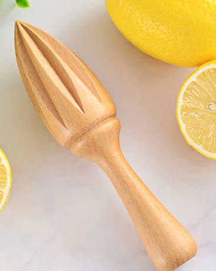

Vegetables are parts of plants that are consumed by humans or other
animals as food. The original meaning is still commonly used and is
applied to plants collectively to refer to all edible plant matter,
including the flowers, fruits, stems, leaves, roots, and seeds. An
alternate definition of the term is applied somewhat arbitrarily,
often by culinary and cultural tradition. It may exclude foods
derived from some plants that are fruits, flowers, nuts, and cereal
grains, but include savoury fruits such as tomatoes and courgettes,
flowers such as broccoli, and seeds such as pulses.
Vegetables are parts of plants that are consumed by humans or other
animals as food. The original meaning is still commonly used and is
applied to plants collectively to refer to all edible plant matter,
including the flowers, fruits, stems, leaves, roots, and seeds. An
alternate definition of the term is applied somewhat arbitrarily,
often by culinary and cultural tradition. It may exclude foods
derived from some plants that are fruits, flowers, nuts, and cereal
grains, but include savoury fruits such as tomatoes and courgettes,
flowers such as broccoli, and seeds such as pulses.
Vegetables play an important role in human nutrition. Most are low in fat and calories but are bulky and filling. They supply dietary fiber and are important sources of essential vitamins, minerals, and trace elements. Particularly important are the antioxidant vitamins A, C, and E. When vegetables are included in the diet, there is found to be a reduction in the incidence of cancer, stroke, cardiovascular disease, and other chronic ailments. Research has shown that, compared with individuals who eat less than three servings of fruits and vegetables each day, those that eat more than five servings have an approximately twenty percent lower risk of developing coronary heart disease or stroke. The nutritional content of vegetables varies considerably; some contain useful amounts of protein though generally they contain little fat, and varying proportions of vitamins such as vitamin A, vitamin K, and vitamin B6; provitamins; dietary minerals; and carbohydrates. Reference: https://en.wikipedia.org/wiki/Vegetable
 Plant scientists have classified fruits into three main groups:
simple fruits, aggregate fruits, and multiple (or composite) fruits.
Plant scientists have classified fruits into three main groups:
simple fruits, aggregate fruits, and multiple (or composite) fruits.
Simple fleshy fruits from apples to berries to watermelon; simple dry fruits including beans and rice, coconuts and carrots; aggregate fruits including strawberries, raspberries, blackberries, pawpaw; multiple fruits such as pineapple, fig, mulberries; (see above re all)— are commercially valuable as human food. They are eaten both fresh and as jams, marmalade and other fruit preserves. They are used extensively in manufactured and processed foods (cakes, cookies, baked goods, flavorings, ice cream, yogurt, canned vegetables, frozen vegetables and meals) and beverages such as fruit juices and alcoholic beverages (brandy, fruit beer, wine). Spices like vanilla, black pepper, paprika, and allspice are derived from berries. Olive fruit is pressed for olive oil and similar processing is applied to other oil bearing fruits/vegetables.
Various culinary fruits provide significant amounts of fiber and water and present significant resistance to chewing; many are generally high in vitamin C. An overview of numerous studies show that fruits (e.g., whole apples or whole oranges) are very satisfying (filling) in the acts of simply eating and chewing them. The fiber consumed in eating fruit promote satiety and help to control weight gain and to provide cholesterol-lowering effects. Regular consumption of fruit is generally associated with reduced risks of several diseases and functional declines associated with aging. A current review for meta-analyses concludes that even current assessments might significantly underestimate the protective associations of regularly eating fruits and vegetables. Reference: https://en.wikipedia.org/wiki/Fruit

Vegetables are parts of plants that are consumed by humans or other animals as food. The original meaning is still commonly used and is applied to plants collectively to refer to all edible plant matter, including the flowers, fruits, stems, leaves, roots, and seeds. An alternate definition of the term is applied somewhat arbitrarily, often by culinary and cultural tradition. It may exclude foods derived from some plants that are fruits, flowers, nuts, and cereal grains, but include savoury fruits such as tomatoes and courgettes, flowers such as broccoli, and seeds such as pulses.
Vegetables are parts of plants that are consumed by humans or other animals as food. The original meaning is still commonly used and is applied to plants collectively to refer to all edible plant matter, including the flowers, fruits, stems, leaves, roots, and seeds. An alternate definition of the term is applied somewhat arbitrarily, often by culinary and cultural tradition. It may exclude foods derived from some plants that are fruits, flowers, nuts, and cereal grains, but include savoury fruits such as tomatoes and courgettes, flowers such as broccoli, and seeds such as pulses.
Vegetables are parts of plants that are consumed by humans or other animals as food. The original meaning is still commonly used and is applied to plants collectively to refer to all edible plant matter, including the flowers, fruits, stems, leaves, roots, and seeds. An alternate definition of the term is applied somewhat arbitrarily, often by culinary and cultural tradition. It may exclude foods derived from some plants that are fruits, flowers, nuts, and cereal grains, but include savoury fruits such as tomatoes and courgettes, flowers such as broccoli, and seeds such as pulses.
| UTENSIL | TYPE | NAME | SIZE |
|---|---|---|---|
| Cookware | Skillet | Medium | |
| Hand Tool | Wooden Spoon | Small | |
|  | Hand Tool | Citrus Reamer | Small |
| Electronic Appliance | Stand Mixer | Big |
Vegetables are parts of plants that are consumed by humans or other animals as food. The original meaning is still commonly used and is applied to plants collectively to refer to all edible plant matter.
Simple fleshy fruits from apples to berries to watermelon; simple dry fruits including beans and rice, coconuts and carrots; aggregate fruits including strawberries, raspberries, blackberries, pawpaw.